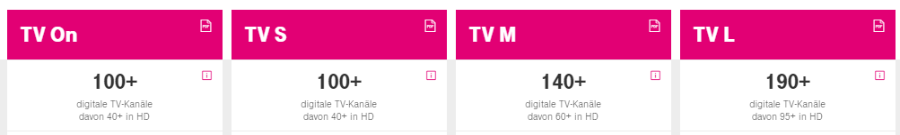

Hatte UPC TV Fiber Plus bzw Speed M mit
185 TV Digital und 66HD SENDER [ohne Radio und extra bezahlte KANÄLE].
Bei den neuen Magenta Kombi Paket TV M+ incl. Internet 250/50,
sollten es lt Angaben Internet
140+ Digital und 60+ HD sein.
Laut Download Senderliste M sind es aber NUR 93 Digital und 58 HD
TV Sender.
Ist das Kombipaket TV M Internet eine Mogelpackung?
Bei UPC hatte ich viel mehr Programme (jedoch geringeren Internetspeed 100/15) aber auch den geringeren Preis.
Warum wird man so getäuscht, indem man falsche TV Sender zahlen
angibt, die nicht eingehalten werden.
Tel bekommt man auch keine Auskunft, da vermutlich schlecht geschultes Personal, bzw man wird nur hin und her verbunden und keiner ist zuständig.
Danke
Hey @dobi54
Man muss genau lesen, was Magenta meint. 
Bei TV M sollten 140+ Sender inkludiert sein und davon 60+ in HD (und die weiteren 80+ in SD).
Derzeit bekommst du 93 in SD und 58 in HD (= 151 Sender). Und ja es sollten mindestens zwei HD Sender mehr sein, damit in allen Regionen 60+ HD Sender verfügbar sind.
Und du musst ja nicht wechseln, wenn du mit deinem derzeitigen Paket mehr Sender hast.
LG NTM
Bearbeitet von NTMDanke NTM betreffend Senderanzahl. "DAVON" im Text wurde überlesen !
Ich würde mir das jetzige TV Paket schon behalten, habe jedoch noch alte Hardware
von UPC. Modem und TV HDR Box.
Der gute Mann bei Magenta sagte, wenn ich diese umtauschen sollte, dann mus das Paket angeglichen werden.
Brauch aber nicht das Internet 500 oder 1000 zu diesem Preis.
Gibts da auch TV Sender, bzw, Programme die man sich dazu selbet aussuchen kann.
Brauch keine die im Folder angegegeben sind, wie EXTRA HD von RTL, VOX usw
Danke
vor 12 Stunden schrieb NTM:Hey @dobi54
Man muss genau lesen, was Magenta meint.
Bei TV M sollten 140+ Sender inkludiert sein und davon 60+ in HD (und die weiteren 80+ in SD).
Derzeit bekommst du 93 in SD und 58 in HD (= 151 Sender). Und ja es sollten mindestens zwei HD Sender mehr sein, damit in allen Regionen 60+ HD Sender verfügbar sind.
Und du musst ja nicht wechseln, wenn du mit deinem derzeitigen Paket mehr Sender hast.
LG NTM
Hey
@dobi54
Sofern du eine
Connect Box
(heißt jetzt Fiber Box 1) und einen
Horizon HD Recorder
(heißt jetzt TV HD Recorder) benützt, hast du die derzeit aktuellste Hardware, so wie sie Magenta auch an neue Kunden ausgibt. Solltest du ältere Hardware haben, wäre es mir neu das man für einen Wechsel einen neuen Tarif braucht.
Übrigens kannst du jedes Internet Paket (auf Coax-Kabel-Basis) mit jedem TV Paket kombinieren (die Preise werden dann entsprechend addiert). Bestellen kannst du diese Kombis aber nicht im Internet, aber z.B. über die Hotline oder im Shop.
LG NTM
Danke, werde mich wenn soweit an die Hotline wenden
Fiber Box 1 und Horizon HD sind aus meiner Sicht absolute Top-Hardwares.
Erstere ist enorm verlässlich und liefert, sofern die anderen Parameter passen, Top -Werte
und die Horizon ist äußerst angenehm und gut zu bedienen.
{kind=link}